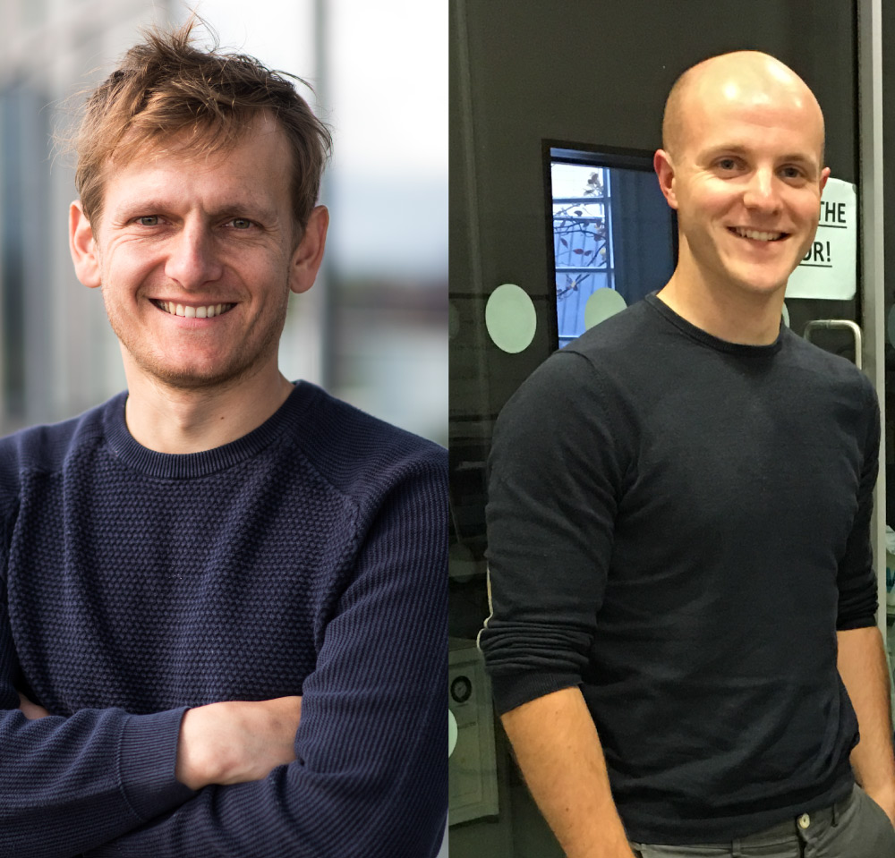
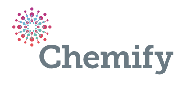
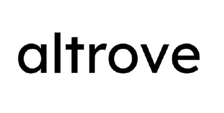
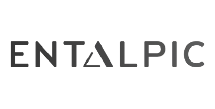
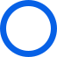
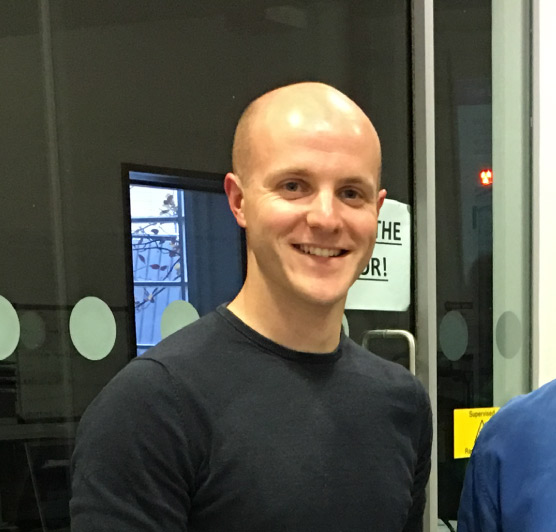

Entalpic
Designed an automation strategy and execution roadmap to scale AI-driven chemistry workflows and reduce time-to-run for high-value experiments.
View project// Entalpic raised a €8.5M seed round

CHEMOBOTAI is a partnership between Jonathan Grizou, an AI & Robotics PhD published in top ML and chemistry venues, and Daniel Salley, a Chemist PhD and former Head of Engineering at Chemify who built custom robotic platforms for automated synthesis.
Together, we consult for businesses in the ChemAI space on lab automation, robotics, and AI strategy – working with world-class companies including Chemify ($50M Series B), Altrove ($10M Seed), and Entalpic (€8.5M Seed).




25+ years of experience in AI, Robotics, and Chemistry
50+ Academic publications in top conferences across Robotics, AI, Chemistry

10+ custom robotics platforms designed, built, and operated and 10k+ automated experiments run

Working with top start-ups and institutions in the ChemAI space

With a PhD in AI & Robotics – awarded best thesis by Fields Medal recipient Cédric Villani – I bring deep expertise in machine learning to the chemistry space. I led an interdisciplinary team of 10 PhDs and engineers at the Cronin Group, pioneering AI-driven approaches to experimental chemistry that laid the foundation for Chemify. I now consult for leading companies in the ML and ChemAI space.

As former Head of Robotic Engineering at Chemify, I led the development of automated synthesis systems that bridge the gap between chemistry and robotics – from 3D-printed reactionware to AI-driven discovery robots. I am a chemist by training and taught myself to design and build custom robotic platforms.
Designed an automation strategy and execution roadmap to scale AI-driven chemistry workflows and reduce time-to-run for high-value experiments.
View project
Built practical recommendations for lab throughput and operational consistency while preserving the scientific rigor required for scale-up and reproducibility.
View projectProvided strategic advisory on automation architecture, robotics integration, and planning support for next-generation autonomous chemistry operations.
View project“The team translated our lab priorities into a practical automation roadmap, keeping execution and chemistry in sync.” – Entalpic, Co-founding Team
Read all testimonials